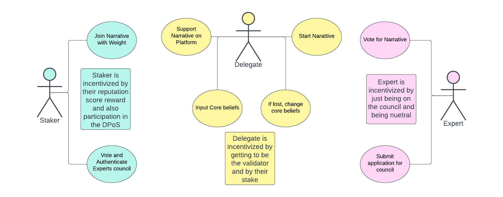
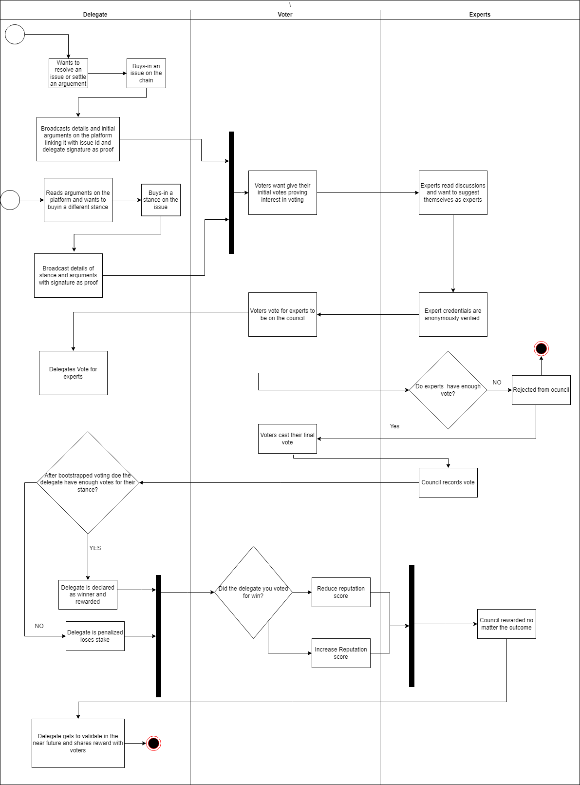

Master's Thesis: Incentivizing Scientific Research Using a Reputation-Scaled Proof of Stake Blockchain
A novel blockchain system designed to combat misinformation and echo chambers by incentivizing rational discourse and scientific reasoning.
Problem Statement
The rise of misinformation and echo chambers in social media platforms has led to biased discourse and a lack of critical thinking in discussions. This thesis proposes a blockchain-based system to encourage rational decision-making and promote access to accurate information.
Description
The thesis proposes a "Reputation Scaled - Proof of Stake" consensus mechanism, where a user's reputation (built through consistent, rational voting) scales their staking power. This new blockchain aims to combat echo chambers on social media by rewarding users for engaging in discussions and supporting viewpoints with scientific or logical backing. The work examines decentralized ledgers, blockchain properties, and existing consensus mechanisms, suggesting modifications to incentivize critical thinking. The proposed system incorporates delegates, voters, and experts, each incentivized to promote rational debate and sound reasoning. Smart contracts and tokens facilitate secure transactions, staking, and issue resolution. Ethical considerations and potential improvements, such as a core belief database and gamification, are also discussed to ensure fairness and inclusivity.

Goals of the System
The primary objective of this blockchain system is to create an environment that promotes and incentivizes critical thinking and debate. This goal is divided into the following sub-goals:
Provide fair incentives for discussions to encourage meaningful engagement.
Encourage users to invest in their opinions, making them more deliberate in decision-making.
Promote scientific reasoning by rewarding users for backing their opinions with logical or empirical evidence.
Ensure anonymity while maintaining accountability, allowing free expression without fear while ensuring responsible participation.
Develop an alternative consensus mechanism that does not rely solely on buying power or computing resources, allowing users to scale up influence through reputation and rational engagement.
Reputation-Scaled Proof of Stake Formula
The system utilizes a Reputation-Scaled Proof of Stake (RS-PoS) model, where a user’s effective stake is determined by:
This formula ensures that users who have a history of rational voting and participation are given greater influence, rather than relying solely on financial means. It allows dedicated and rational participants to compete with high-stake holders on an equal footing, fostering a fairer, more democratic decision-making process.

Key Features
Reputation-Scaled Proof of Stake
Expert Council for Rational Oversight
Incentivized Participation
Immutable & Transparent Voting
Technology Stack
Blockchain: Custom-built with Python and Fast API
Frequently Asked Questions
The thesis addresses the increasing prevalence of echo chambers and misinformation, particularly within online social media. It proposes a blockchain-based system to incentivize critical reasoning and rational discourse, improving access to accurate information.
Reputation-Scaled Proof of Stake (RS-PoS) is a modified PoS consensus mechanism where a user's stake, and therefore their influence, is scaled by their reputation. Reputation is earned by voting for the winning stance on issues or demonstrating a strong commitment to their beliefs, ensuring that rational thinkers gain more influence over time.
The system offers incentives based on user roles:
Delegates: Stake cryptocurrency on issues and gain rewards if their stance aligns with the final consensus.
Voters: Earn weight and rewards for choosing the winning stance.
Experts: Selected council members receive a fixed payment for scientific and logical contributions.
The system defines several custom transactions:
STAKE: Lock cryptocurrency to compete for validation.
BUYINFIRST: Initiate a new issue or proposal with a minimum stake.
VOTE: Record voter stances on an issue.
EXPERT-VOTE: Experts vote with weighted influence.
FINAL-VOTE: The last round of voting determines final consensus.
Experts act as a check and balance, similar to a judiciary. Their opinions carry significant weight and are based on scientific or logical backing rather than political influence.
Security is ensured through properties such as Common Prefix, Chain Quality, and Chain Growth. Additionally, blocks include posHash and accHash fields to verify consensus and account model states.